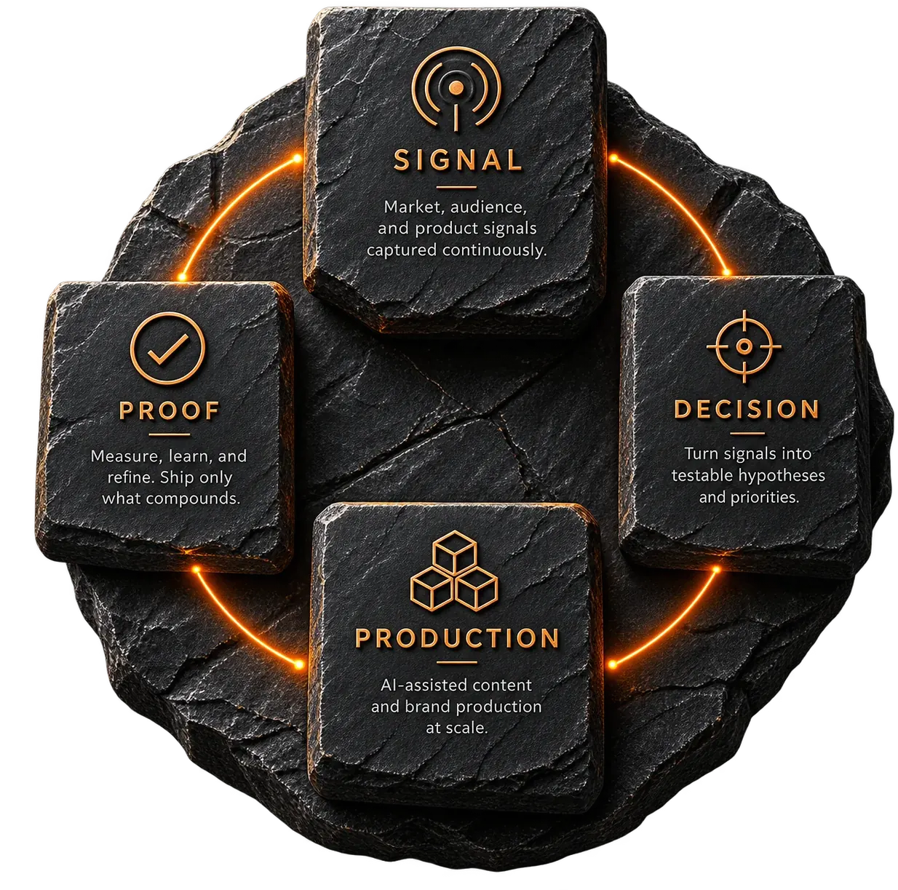

Креативный директор · бренды в e-commerce и на маркетплейсах
Из новой ниши в
продажи. Легко.
Разбираю рынок, собираю визуальный язык бренда и ставлю производство, которое держит этот язык на всех каналах. 13 лет в дизайне, 3,5 года во главе креативной команды бренда техники для дома.
Один цикл
на всё

Что изменилось за 3,5 года в бренде техники для дома
-
1 → 3
Направления на одной системе
RAW, ЗОЖ, ДАЧА. Новое запускается без переизобретения бренда.
-
35+
SKU в одном визуальном языке
Карточки, баннеры, видео и упаковка собраны по одному стандарту.
-
7
Каналов с общим стандартом
От маркетплейсов до YouTube: один язык, разные форматы.
Система
Живая база,
открыта целиком
Почему это не разовая удача
Каждое решение идёт одним путём. Сигнал из данных, гипотеза, норма, задача, вывод. Путь не в голове, он записан и лежит в Notion: 15 связанных баз, задачник с нормами часов и правок, метрики из VK, YouTube и маркетплейсов приходят через API.
- Сигнал
- Гипотеза
- Норма
- Задача
- Вывод
Решение принимается здесь
-
Контекст на месте
Сигналы, разборы и ссылки лежат в одной связанной базе.
-
Решение с основанием
У каждого записаны причина, норма и то, чем закончилось.
-
Материалы по типам
Брифы, сценарии, съёмка и выдачи разобраны и находятся.
-
Доказательство копится
Тест, результат и повтор связаны между собой.
-
Одно рабочее место
Команда работает в ней каждый день, без параллельных таблиц.
Что через неё проходит
- 10–15 рекламных кампаний в год
- 10+ продуктов в год
- 10–15 роликов в месяц
- 7 человек в команде, все задачи в одной системе
Каждая цифра живёт внутри системы: с метриками по каналам, базой знаний, квартальной рамкой целей и типовыми задачами, которые уточняются от запуска к запуску.
Неделя на разбор незнакомого рынка
Темы, форматы подачи, реклама и каналы конкурентов. На выходе карта с типовыми задачами, по которой команда начинает работать сразу.
Здесь встанут два-три разбора чужих ниш: рынок, разрыв, гипотеза с числом. Собираются сейчас.
Кейс
Из каталога техники в клуб по интересу
Бренд техники для дома, 35+ SKU, семь каналов. Бренд-платформа, визуальный язык, клуб вокруг продукта.
Ищу роль креативного директора
Электронная коммерция, маркетплейсы, потребительские бренды. Начну с разбора вашей ниши.